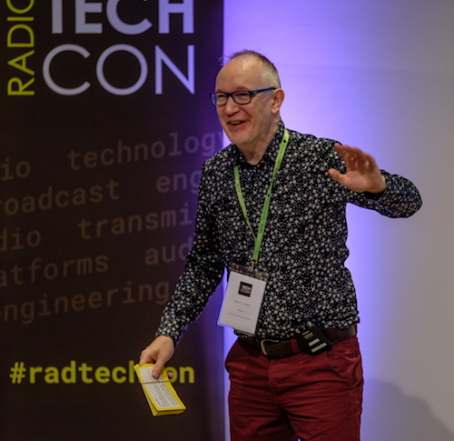
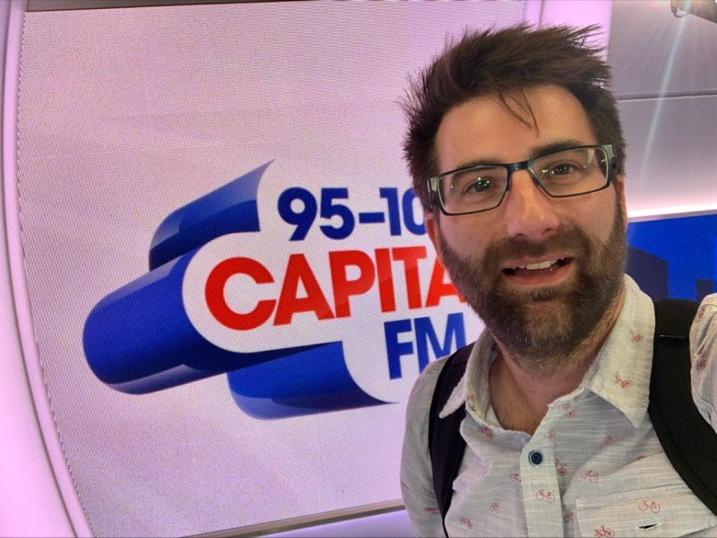

The TechCon conference has been run by different groups during its history. Previously it was organised as part of the UK Radio Festival, under The Radio Academy. Since 2016 it has been run independently by TBC Media Ltd. due to limited resources at The Radio Academy
This culture optimizes the use of technologies and enhances competencies, aligning capabilities with organizational goals. "Navigating the Digital Frontier: Empowering Competencies Through Innovation" is designed to provide a comprehensive platform for exploring how technology is reshaping businesses and enhancing competencies.
David Lloyd – Radio TechCon Host
Former commercial radio executive turned radio consultant, historian and broadcaster, David has been in radio for over forty years, running stations of all formats from Galaxy to Century, LBC to Virgin. He’s also the author of How to Make Great Radio, Radio Moments and Radio Secrets.
Nathan Dixon – Enterprise Architect for Technology, Arqiva
Nathan Dixon, technology visionary and Arqiva’s Enterprise Architect. He currently has responsibility for a team of technologists who lead the Infrastructure, Network and Infosec strategy across Arqiva’s media and utilities platforms. Nathan is a Chartered Engineer and has over 20 years’ experience designing and delivering innovative telecoms, radio and tv broadcast solutions with a passion for media networking technology. Nathan is a keen mountain biker, is married with two young boys and lives in Winchester.
